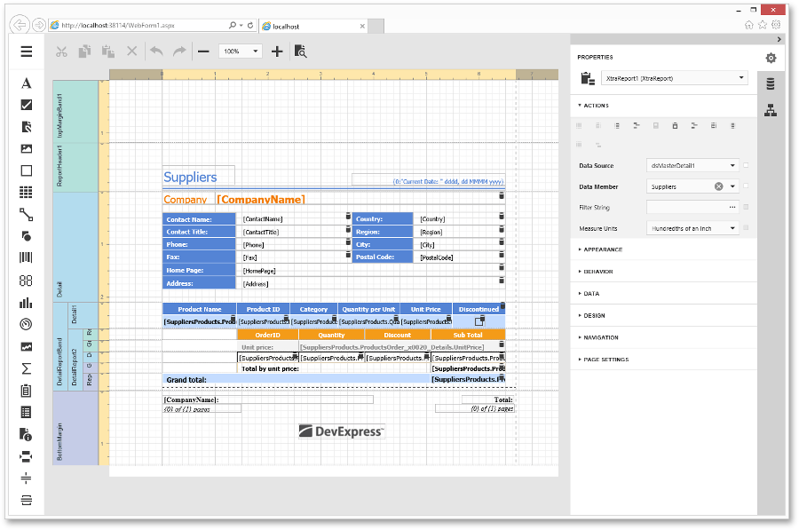

Report Designer
This section of the documentation describes the basic principles of creating reports with Web Report Designer.
The Web Report Designer allows you to create new reports from scratch, bind them to data, display a report's Print Preview and send its output to a printer or export it to a file on a disk.

The Web Report Designer's main features:
- a JavaScript/HTML5 engine that provides a responsive user interface for in-browser reporting on the client;
- an integrated Property Grid, a Quick Access panel for editing commonly used options, a Data Explorer and Parameters panels;
- a rich set of report controls (see the Toolbox document for a complete list of available controls);
- cross-browser compatibility.
Different aspects of using the Web Report Designer are covered in the following documentation sections.